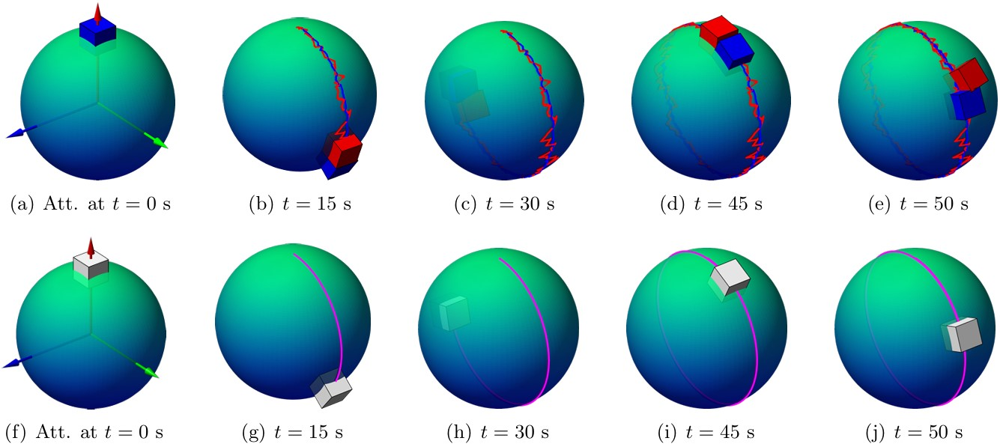
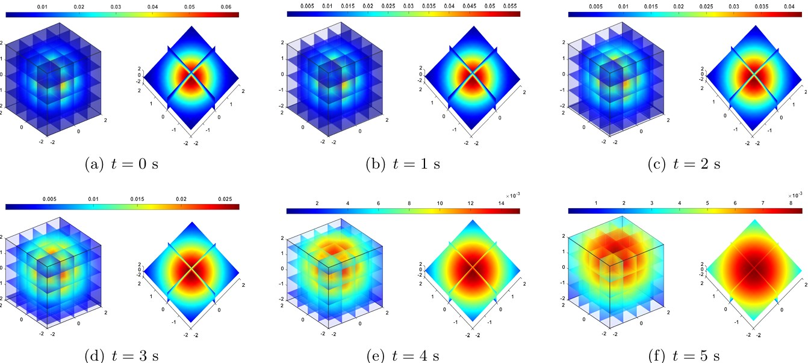

Tianzhi Li 李天志

About me
I am currently a visiting PhD student under the supervision of Prof. François Gay-Balmaz at Nanyang Technological University (NTU) in Singapore. I received my B.Sc. in Mathematics from Beijing Institute of Technology (BIT) in 2021 (Supervisor: Prof. Donghua Shi). Now I am also a PhD student (Supervisor: Prof. Jinzhi Wang) majored in Mechanics and Control at Peking University (PKU).
Research Interest
My research interest lies at the intersection of the following fields:
Geometric Mechanics (Stochastic & Nonholonomic)
Variational Integrators
Information Geometry
Physics-Informed Learning
Please see Google Scholar and ResearchGate for more information.
Selected Research
Variational unscented Kalman filter on matrix Lie groups, Automatica, 172: 111995, 2025. (Regular Paper)
(Joint work with Prof. Jinzhi Wang)
In this work, we proposed a family of computationally efficient unscented Kalman filters (UKF-Vs) for mechanical systems on Lie groups. The obtained formulation is independent of the nonlinear Lie group state-space, and it sheds light on fully predicting and updating on the Lie algebra and its dual. In particular, these formulations can avoid singularities or the well-known gimbal lock in the attitude estimation problem. Numerical results show that the proposed UKF-Vs exhibit significant improvements in terms of the estimation error and mean square error.
|  |
Reduced dynamics and geometric optimal control of nonequilibrium thermodynamics: Gaussian case, Automatica, 164: 111626, 2024.
(Joint work with Prof. Rui Fu and Prof. Jinzhi Wang)
In this work, we studied the geometric structures of n-DOF Gaussian distributions and proposed a geometric optimal control algorithm for minimum-energy optimal control problem of Gaussian distributions. The proposed reduced dynamics reduces the high nonlinearity appearing in the original non-Euclidean state space of a thermal process, and it is regarded as dynamical constraints in the geometric optimal control problem. The proposed approach is applied to three different scenarios, including two benchmark examples, to demonstrate the applicability and effectiveness.
|  |
News
Dec 2024: I am so happy and excited to be a visiting student under the supervision of Prof. François Gay-Balmaz at Nanyang Technological University (NTU) in Singapore!
Sept 2024: Our paper Variational unscented Kalman filter on matrix Lie groups (Joint work with Prof. Jinzhi Wang) is accepted to Automatica. In this work, we proposed a family of computationally efficient unscented Kalman filters for mechanical systems on Lie groups.
July 2024: I was thrilled to present “Stochastic Nonholonomic Variational Principle” at the Geometric Mechanics & Control Seminar (BIT) organized by Prof. Donghua Shi. The discussion with Prof. Hiroaki Yoshimura and Prof. Linyu Peng was very insightful and interesting!
July 2024: I am so happy to announce that I am awarded the CSC Scholarship! I will be a visiting student of Prof. François Gay-Balmaz at Nanyang Technological University (NTU) for a 12-month academic visit.
April 2024: I was thrilled to give a talk about my PhD work at Beijing Institute of Technology (BIT) invited by Prof. Ju Chen and Prof. Qiang Tian. The discussion was very insightful and interesting!
Feb 2024: Our paper Reduced dynamics and geometric optimal control of nonequilibrium thermodynamics: Gaussian case (Joint work with Prof. Rui Fu and Prof. Jinzhi Wang) is accepted to Automatica. In this work, we studied the geometric structures of n-DOF Gaussian distributions and proposed a geometric optimal control algorithm for the energy-minimum optimal control problem of Gaussian distributions.
August 2023: I was thrilled to present “Multisymplectic Unscented Kalman Filter for Geometrically Exact Beams” at the 6th International Conference on Geometric Science of Information (GSI)! I am very grateful to Prof. Hiroaki Yoshimura, Prof. Géry de Saxcé, Dr. Christian Offen, Prof. Zdravko Terze, and Prof. François Dubois for their valuable comments and suggestions on my work! Also, I was very lucky to meet Stephanie Chen, Juliette Florin, Daiying Yin, and Takemi Nakamura. We had some happy time at Saint-Malo, France!
July 2023: I was honored to present ’'Variational Unscented Kalman Filter on Matrix Lie Groups’’ at the Geometric Mechanics & Control Seminar (BIT) organized by Prof. Donghua Shi and Prof. Dmitry Zenkov.